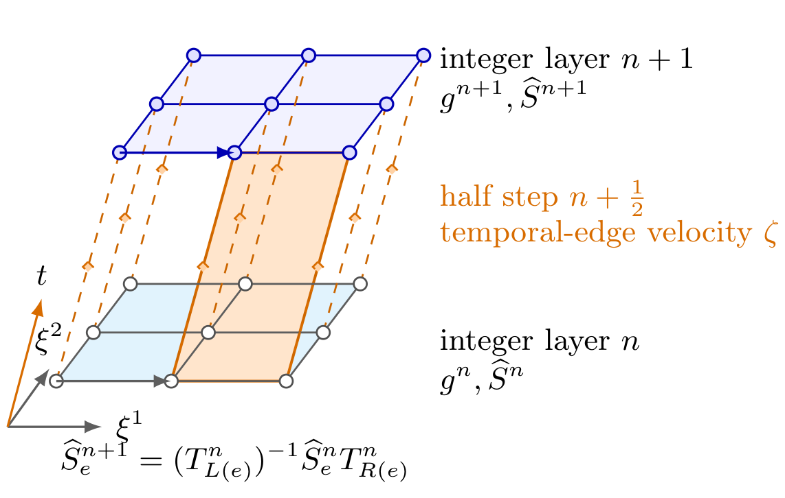
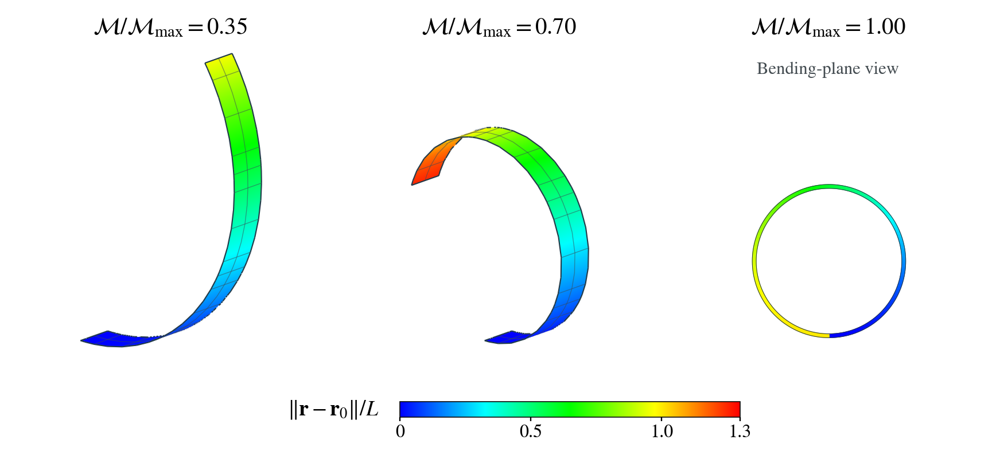
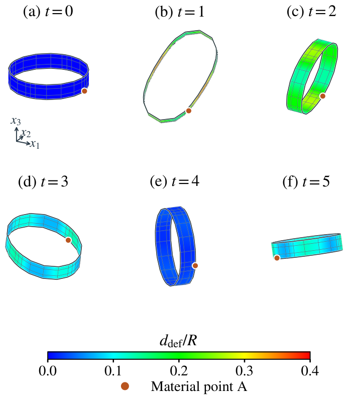
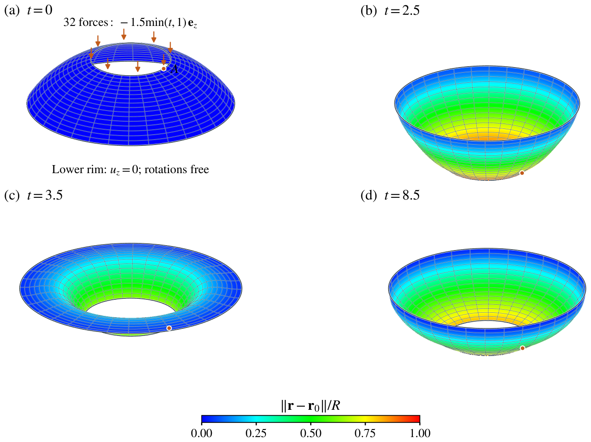
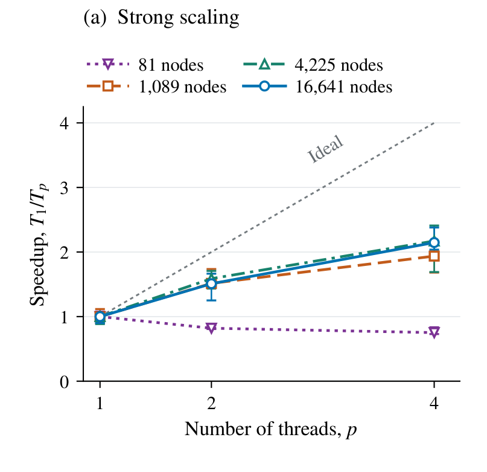
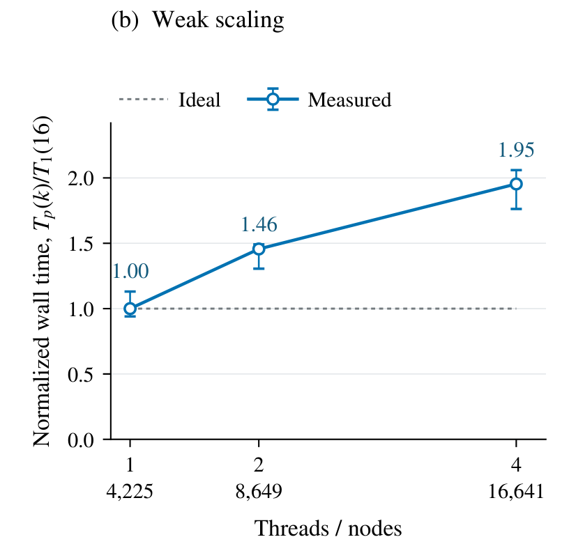

A parallel staggered Hamel field integrator for geometrically exact shell dynamics
Abstract
We derive a staggered time integrator for geometrically exact shells from the Hamilton–d’Alembert principle in Hamel’s field formalism. The method couples nodal motion to strain along the mesh edges and preserves closure around initially compatible cells. For smooth solutions on a fixed spatial mesh, consistent initialization gives second-order accuracy in time.
One staggered time step

- Assemble the forces. The edge strains at time level n determine the internal forces and moments at the nodes.
- Solve at each free node. With these forces, the applied loads and the preceding half-step momentum, each node solves its own Hamel equation for the new half-step velocity. This velocity gives the rigid-motion increment T at that node.
- Advance the mesh. Each node updates its position and orientation. Each edge uses the increments at its two ends to transport its stored relative motion and recover the new strain. Edges in both mesh directions can advance in parallel.
Numerical results
Rolling a cantilever strip into a circle

Tumbling cylinder

Buckling and rebound of an open spherical shell

Parallel performance on a curved panel

